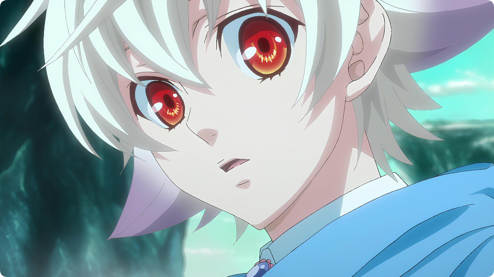
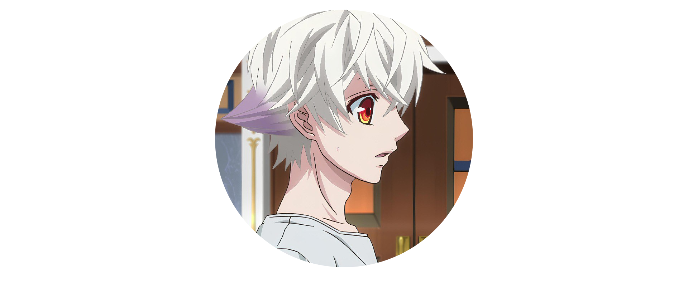
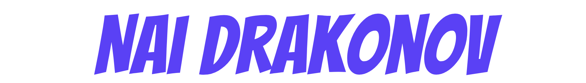

- Бездомный бог
- Моё перерождение в слизь
- Реинкорнация безработного
- Наруто
- Оверлорд
- ДжоДжо
- Убийца акамэ
- Класс убийц
- Класс превосходства
- Атака титанов
- Ванпачмен
- Мастер меча онлайн
- Клинок, рассекающий демонов
- Моя геройская академия
- Хантер Х Хантер
- Магическая битва
- Ван Пис
- Ангельские ритмы
- Моб Психо 100
- Обещанный Неверленд
- Доктор Стоун
- Чёрный клевер
- Пожиратель душ
- Гуррен-Лаганн
- Сатана на подработке
- Сага о Винланде
- Последний серафим
- Тёмный дворецкий
- Маги: Лабиринт Волшебства
- Данганронпа
- Врата: там бьются наши воины
- Я сакамото, а что
- Поднятие уровня в одиночку
- Туалетный мальчик Ханако
- Тетрадь смерти
- Квартет из альтернативного мира
- Инцидент Кэмоно
- Шаман Кинг
- Дневник слизи попаданца
- Контроль
- Этот прекрасный мир одаренный взрывами
- Повесть о конце света
- Астра, затерянная в космосе
- Терраформирование
- Пристанище для потерянных
- Избранный богами
- Фармацевт из параллельного мира
- На самом ли деле я самый сильный
- Моя новая горничная очень подозрительна
- Мой сосед бог разрушения
- Тама: откуда же он взялся
- Этот прекрасный мир
- Правильный ответ: Кадо
- Гениальный принц. Гайд по уплате госдолга
- Смотрительница Сунохары
- Добро пожаловать в ад, Ирума
- Карнавал
- Перевоплотился в седьмого
- Биско-ржавоед
- Нежить и Неудача
- Боруто
- Стальной алхимик
- С нуля, Пособие по выживанию в альтернативном мире
- Семь смертных грехов
- Волейбол
- Синий экзорцист
- Паразит
- Евангелион
- Фейри Тейл
- Восхождение героя щита
- Токийские мстители
- Военная хроника маленькой девочки
- Фури кури
- Непризнанный школой владыка демонов
- Ангел кровопролития
- Берсерк
- Покемон
- Лилии на ветру
- Я переродился торговым автоматом в лабиринте
- Четверо братьев Юдзуки
- В другом мире со смартфоном
- Бакуган
- Хоримия
- Школьные няни
- Нет игры - нет жизни
- Ветролом
- Мастер демонического клинка из академии Святого Меча
- Папаши-дружбаны